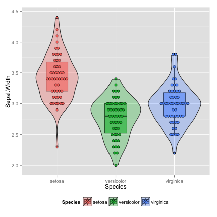
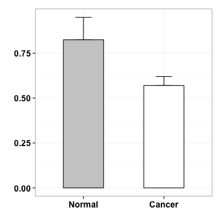

Generating publication quality figures
using R & ggplot2
Guangchuang Yu
Jul. 24, 2014

Why ?
- There are so many biologists use excel for graphing.
- It's easy to create a barplot in excel, but hard for boxplot.
Power
require(ChIPseeker)
files <- getSampleFiles()
peak <- readPeakFile(files[[4]])
peak[1:2,]
## GRanges with 2 ranges and 2 metadata columns:
## seqnames ranges strand | V4 V5
## <Rle> <IRanges> <Rle> | <factor> <numeric>
## [1] chr1 [815825, 818154] * | MACS_peak_1 113.1
## [2] chr1 [894175, 895222] * | MACS_peak_2 51.0
## ---
## seqlengths:
## chr1 chr10 chr11 chr12 chr13 chr14 ... chr7 chr8 chr9 chrX chrY
## NA NA NA NA NA NA ... NA NA NA NA NA
Power
plotChrCov(peak, weightCol="V5")
Power
Flexibility
Flexibility
Proteomics. 2011, 11(11):2182-94.
Fun
Fun
woo your girl/boy friend
Outlines
Data and Mapping
Geometric
Scale
Layer
Facet
Theme
Data and Mapping
- ggplot - The main function where you specify the dataset and variables to plot
- aes - aesthetics
- shape, transparency (alpha), color, fill, linetype.
Geometric
- geoms - geometric objects
- geom_point(), geom_bar(), geom_density(), geom_line(), geom_area()
The iris dataset
data(iris)
head(iris)
## Sepal.Length Sepal.Width Petal.Length Petal.Width Species
## 1 5.1 3.5 1.4 0.2 setosa
## 2 4.9 3.0 1.4 0.2 setosa
## 3 4.7 3.2 1.3 0.2 setosa
## 4 4.6 3.1 1.5 0.2 setosa
## 5 5.0 3.6 1.4 0.2 setosa
## 6 5.4 3.9 1.7 0.4 setosa
scatter plot
ggplot(data = iris, aes(x = Sepal.Length, y = Sepal.Width)) + geom_point()
increase the size
ggplot(data = iris, aes(x = Sepal.Length, y = Sepal.Width)) + geom_point(size=3)
add color
ggplot(data = iris, aes(x = Sepal.Length, y = Sepal.Width, color=Species)) +
geom_point(size=3)
differentiate points by shape
ggplot(data = iris, aes(x = Sepal.Length, y = Sepal.Width, color=Species)) +
geom_point(aes(shape=Species), size=3)
histogram
ggplot(data=iris) +
geom_histogram(aes(x=Sepal.Length), binwidth=0.2, fill="steelblue", color="black")
fill by Species
ggplot(data=iris) +
geom_histogram(aes(x=Sepal.Length, fill=Species), binwidth=0.2, color="black")

the diamonds dataset
data(diamonds)
set.seed(42)
dsmall <- diamonds[sample(nrow(diamonds), 1000), ]
head(dsmall)
## carat cut color clarity depth table price x y z
## 49345 0.71 Very Good H SI1 62.5 60 2096 5.68 5.75 3.57
## 50545 0.79 Premium H SI1 61.8 59 2275 5.97 5.91 3.67
## 15434 1.03 Ideal F SI1 62.4 57 6178 6.48 6.44 4.03
## 44792 0.50 Ideal E VS2 62.2 54 1624 5.08 5.11 3.17
## 34614 0.27 Ideal E VS1 61.6 56 470 4.14 4.17 2.56
## 27998 0.30 Premium E VS2 61.7 58 658 4.32 4.34 2.67
barplot
ggplot(dsmall, aes(x=clarity, fill=cut)) + geom_bar()
side-by-side barplot
ggplot(dsmall, aes(x=clarity, fill=cut)) + geom_bar(position="dodge")
density plot
ggplot(dsmall)+geom_density(aes(x=price, colour=cut))
density plot
ggplot(dsmall)+geom_density(aes(x=price, fill=clarity), alpha=0.8)
boxplot
ggplot(dsmall)+geom_boxplot(aes(x=cut, y=price,fill=color))
the climate dataset
climate <- read.csv("data/climate.csv")
head(climate)
## X Source Year Anomaly1y Anomaly5y Anomaly10y Unc10y
## 1 102 Berkeley 1901 NA NA -0.162 0.109
## 2 103 Berkeley 1902 NA NA -0.177 0.108
## 3 104 Berkeley 1903 NA NA -0.199 0.104
## 4 105 Berkeley 1904 NA NA -0.223 0.105
## 5 106 Berkeley 1905 NA NA -0.241 0.107
## 6 107 Berkeley 1906 NA NA -0.294 0.106
line plot
p <- ggplot(climate, aes(Year, Anomaly10y)) + geom_line()
p
line plot with confidence interval
p + geom_ribbon(aes(ymin = Anomaly10y - Unc10y,
ymax = Anomaly10y + Unc10y), fill = "blue", alpha = .1)
Scale
- Define how your data will be plotted
- continuous, discrete, log
scatter plot of price vs carat
ggplot(dsmall, aes(x=carat, y=price, color=color))+geom_point()
transform y axis in log scale
ggplot(dsmall, aes(x=carat, y=price, color=color))+geom_point() + scale_y_log10()
manual color scale
cols= c("#A6CEE3", "#99CD91", "#B89B74", "#F06C45", "#ED8F47", "#825D99", "#B15928")
ggplot(dsmall, aes(x=carat, y=price, color=color))+geom_point() +
scale_y_log10() + scale_color_manual(values=cols)
Layer

f1 <- function(x) {
y1 <- 3*sqrt(1-(x/7)^2)
y2 <- -3*sqrt(1-(x/7)^2)
y <- c(y1,y2)
d <- data.frame(x=x,y=y)
d <- d[d$y > -3*sqrt(33)/7,]
return(d)
}
x1 <- c(seq(3, 7, 0.001), seq(-7, -3, 0.001))
d1 <- f1(x1)
p1 <- ggplot(d1,aes(x,y)) + geom_point(color="red") +xlab("") + ylab("") + theme_bw()
p1
x2 <- seq(-4,4, 0.001)
y2 <- abs(x2/2)-(3*sqrt(33)-7)*x2^2/112-3 + sqrt(1-(abs(abs(x2)-2)-1)^2)
d2 <- data.frame(x2=x2, y2=y2)
p2 <- p1 + geom_point(data=d2, aes(x=x2,y=y2), color="yellow")
p2
x3 <- c(seq(0.75,1,0.001), seq(-1,-0.75,0.001))
y3 <- 9-8*abs(x3)
d3 <- data.frame(x3=x3, y3=y3)
p3 <- p2+geom_point(data=d3, aes(x=x3,y=y3), color="green")
p3
x4 <- c(seq(0.5,0.75,0.001), seq(-0.75,-0.5,0.001))
y4 <- 3*abs(x4)+0.75
d4 <- data.frame(x4=x4,y4=y4)
p4 <- p3+geom_point(data=d4, aes(x=x4,y=y4), color="steelblue")
p4
x5 <- seq(-0.5,0.5,0.001)
y5 <- rep(2.25,length(x5))
d5 <- data.frame(x5=x5,y5=y5)
p5 <- p4+geom_point(data=d5, aes(x=x5,y=y5))
p5
x6 <- c(seq(-3,-1,0.001), seq(1,3,0.001))
y6 <- 6 * sqrt(10)/7 +
(1.5 - 0.5 * abs(x6)) * sqrt(abs(abs(x6)-1)/(abs(x6)-1)) -
6 * sqrt(10) * sqrt(4-(abs(x6)-1)^2)/14
d6 <- data.frame(x6=x6,y6=y6)
d6 <- d6[-which(is.na(d6[,2])), ]
p6 <- p5+geom_point(data=d6,aes(x=x6,y=y6), colour="blue")
p6

boxplot
p <- ggplot(iris, aes(x=Species, y=Sepal.Width, fill=Species)) +
geom_boxplot(alpha=0.6, width=0.5)
p
boxplot with data points
p <- p + geom_dotplot(binaxis="y", stackdir="center", position="dodge", dotsize=0.5)
p
## stat_bindot: binwidth defaulted to range/30. Use 'binwidth = x' to adjust this.
violin: add density curve
vp <- p+geom_violin(alpha=0.3)
vp
## stat_bindot: binwidth defaulted to range/30. Use 'binwidth = x' to adjust this.
Facet
ggplot(iris, aes(Sepal.Length, Sepal.Width, color = Species)) +
geom_point() + facet_grid(.~Species)
ggplot(iris, aes(Sepal.Length, Sepal.Width, color = Species)) +
geom_point() + facet_grid(Species~.)

ggplot(dsmall, aes(carat, price, color=color)) +
geom_point() +facet_grid(cut~clarity)
Theme
- A great way to define custom plots
The JIONG (囧)
f <- function(x) 1/(x^2-1)
x <- seq(-3,3, by=0.001)
y <- f(x)
d <- data.frame(x=x,y=y)
p <- ggplot()
p <- p+geom_rect(fill = "white",color="black",size=3,
aes(NULL, NULL,xmin=-3, xmax=3,
ymin=-3,ymax=3, alpha=0.1))
p <- p + geom_line(data=d, aes(x,y), size=3)+ylim(-3,3)
p
all decoration are modifiable
theme_null <- function() {
theme_bw() %+replace%
theme(axis.text.x=element_blank(),
axis.text.y=element_blank(),
legend.position="none",
panel.grid.minor=element_blank(),
panel.grid.major=element_blank(),
panel.background=element_blank(),
axis.ticks=element_blank(),
panel.border=element_blank())
}
p <- p+theme_null()+xlab("")+ylab("")
p
vp <- vp + theme(legend.position="bottom")
vp
## stat_bindot: binwidth defaulted to range/30. Use 'binwidth = x' to adjust this.

vp <- vp + theme(axis.text.x = element_text(colour = "purple",
size = 20))
vp
## stat_bindot: binwidth defaulted to range/30. Use 'binwidth = x' to adjust this.
vp + theme(axis.title.y = element_text(angle = 0))
## stat_bindot: binwidth defaulted to range/30. Use 'binwidth = x' to adjust this.
many pre-defined theme
wall street journal
require(ggthemes)
vp+theme_wsj()
## stat_bindot: binwidth defaulted to range/30. Use 'binwidth = x' to adjust this.
Stata theme
vp+theme_stata()
## stat_bindot: binwidth defaulted to range/30. Use 'binwidth = x' to adjust this.
Case study
Mol Biosyst. 2011, 7(2):472-9.
data
Normal <- c(0.83, 0.79, 0.99, 0.69)
Cancer <- c(0.56, 0.56, 0.64, 0.52)
m <- c(mean(Normal), mean(Cancer))
s <- c(sd(Normal), sd(Cancer))
d <- data.frame(V=c("Normal", "Cancer"), mean=m, sd=s)
d$V <- factor(d$V, levels=c("Normal", "Cancer"))
d
## V mean sd
## 1 Normal 0.825 0.12477
## 2 Cancer 0.570 0.05033
mapping & geometric
p <- ggplot(d, aes(V, mean, fill=V, width=.5))
p <- p+geom_errorbar(aes(ymin=mean, ymax=mean+sd, width=.2),
position=position_dodge(width=.8))
p

geometric & layer
p <- p + geom_bar(stat="identity", position=position_dodge(width=.8), colour="black")
p
scale
p <- p + scale_fill_manual(values=c("grey80", "white"))
p
theme
p <- p + theme_bw() +theme(legend.position="none") + xlab("") + ylab("")
p
theme
p <- p + theme(axis.text.x = element_text(face="bold", size=14),
axis.text.y = element_text(face="bold", size=14))
p

scale
p <- p+scale_y_continuous(expand=c(0,0), limits=c(0, 1.2), breaks=seq(0, 1.2, by=.2))
p
geometric
p <- p+geom_segment(aes(x=1, y=.98, xend=1, yend=1.1))
p
geometric
p <- p+geom_segment(aes(x=2, y=.65, xend=2, yend=1.1))
p
geometric
p <- p+geom_segment(aes(x=1, y=1.1, xend=2, yend=1.1))
p
annotation
p <- p + annotate("text", x=1.5, y=1.06, label="*")
p